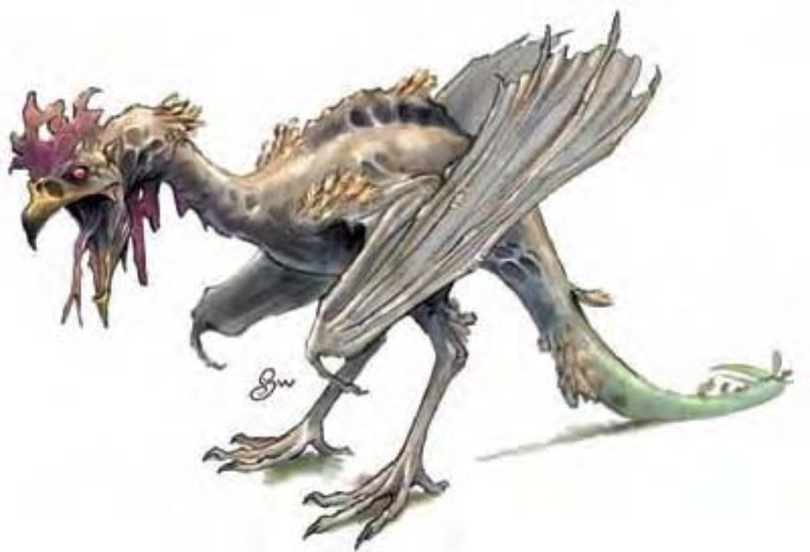

| 生命骰： | 5d10（27hp） |
| 先攻： | +3 |
| 速度： | 20英尺（4格），飞行60英尺（不良） |
| 防御等级： | 14（+1体型，+3敏捷），接触14，措手不及11 |
| 基本攻击/擒抱： | +5/-1 |
| 攻击： | 啮咬+9近战（1d4-2外加石化） |
| 全力攻击： | 啮咬+9近战（1d4-2外加石化） |
| 占据/触及： | 5英尺/5英尺 |
| 特殊攻击： | 石化 |
| 特殊能力： | 黑暗视觉60尺，昏暗视觉 |
| 豁免： | 强韧+4，反射+7，意志+2 |
| 属性： | 力量6，敏捷17，体质11，智力2，感知13，魅力9 |
| 技能： | 聆听+7，侦察+7 |
| 专长： | 警觉，闪避，武器娴熟B |
| 区域： | 温带平原 |
| 组织： | 单独，成双，成群飞翔（3-5），或集群飞翔（6-13） |
| 挑战等级： | 3 |
| 宝物： | 无 |
| 阵营： | 总是中立 |
| 进化： | 6-8HD（小型）；9-15HD（中型） |
| 等级调整： | ― |
这种鸟类生物约有一只大鹅或是火鸡的体型。它拥有公鸡的头部与身体、蝙蝠的双翼、以及蜥蜴般的长尾。它的眼睛闪烁着危险的猩红光彩。
蛇鸡兽是怪诞、令人讨厌的混种。其石化能力恶名昭彰。
雄性蛇鸡兽像公鸡一样拥有肉垂和头冠。雌性远比雄性稀少，唯一区别在于没有肉垂和头冠。蛇鸡兽通常约有25磅重。
战斗蛇鸡兽会猛烈的攻击任何它们认为会威胁到自己或者其巢穴的东西。成群的蛇鸡兽会尽可能淹没对手并使他们陷入混乱，有时还会直接飞到它们的对手面前。
石化Petrification（Su）：生物如果被蛇鸡兽的啮咬命中必须通过DC12的强韧检定否则立即变成石头。此项豁免DC基于体质。蛇鸡兽免疫同类的石化能力，但其他石化能力依然能对其起作用（例如美杜莎medusa的凝视攻击、石化牛gorgon的喷吐武器、法术石化术flesh to stone，或是其他类似效应）。